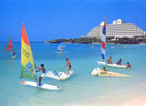
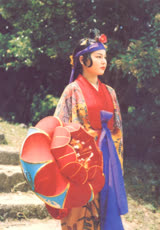
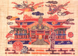
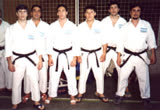

Fotos de Okinawa
Falta en el archivoEsta fotografía no está en la copia local del sitio 2001; es recuperable del servidor original.
a_foto_de_una_escultura_para_presentacion_2.jpgFalta en el archivoEsta fotografía no está en la copia local del sitio 2001; es recuperable del servidor original.
a_ruinas_del_castillo_nakagusuku_1440.jpgFalta en el archivoEsta fotografía no está en la copia local del sitio 2001; es recuperable del servidor original.
a_representacion_del_rey_y_reina_de_ryukyu_2.jpg
Falta en el archivoEsta fotografía no está en la copia local del sitio 2001; es recuperable del servidor original.
a_vestimenta_baile_ryukyu_2_1.jpgFalta en el archivoEsta fotografía no está en la copia local del sitio 2001; es recuperable del servidor original.
a_entrada_al_castillo_de_shuri_1.jpg
Falta en el archivoEsta fotografía no está en la copia local del sitio 2001; es recuperable del servidor original.
a_mapa_de_okinawa_2.jpg
Falta en el archivoEsta fotografía no está en la copia local del sitio 2001; es recuperable del servidor original.
a_cuidad_de_naha_rodeando_castillo_shuri_1.jpg